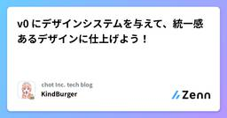

chot Inc. tech blogのフィード
https://zenn.dev/p/chot
ちょっと株式会社（https://chot-inc.com）のエンジニアブログです。 フロントエンドエンジニア募集中！ カジュアル面接申し込みはこちらから https://chot-inc.com/recruit/iuj62owig
フィード

v0 にデザインシステムを与えて、統一感あるデザインに仕上げよう！ 2
2
chot Inc. tech blogのフィード
ちょっと株式会社の KindBurger です！本記事では、プロンプトだけでは表現しきれないデザイン原則を、デザインシステムを「コンテキスト」として与えることでどう改善できるのかを紹介します。また、v0 にはサンプルのデザインシステムも用意されており、すぐに試すことができます 🎉これを利用すれば、次のように一貫性のあるデザインが整ったサイトを簡単に生成できます。 v0 とはざっくりいうと 「アイデアを素早くかたちにできる」 生成 AI ツールです。自然言語のプロンプトや画像、Figma ファイルなどから、React / Next.js / Tailwind CSS / ...
1日前

Cloudflare Redirect Rulesで爆速簡単リダイレクト
chot Inc. tech blogのフィード
CloudflareのRedirect Rulesで、すぐに、簡単に、リダイレクト設定ができたので紹介します。 はじめにわたしがプライベートで建てているサービスは以下の構成で動いています。（ドメインは仮のものです）service.example.comメインのEC2インスタンスにつながる。基本的にユーザーはこのドメインにアクセスしてサービスを利用しているmediaproxy-service.example.comプロキシ用のEC2インスタンスにつながる。画像や動画などのプロキシを行っており、画像のURLなどはこのドメインが使われるドメイン・DNS管理は...
9日前
Socket.IOはどのようにアクセストークンを送っているのか
chot Inc. tech blogのフィード
はじめに標準の new WebSocket()（RFC 6455）はブラウザ実装で任意のリクエストヘッダー追加を禁止しています。そのため、ハンドシェイクの HTTP リクエストで任意の HTTP ヘッダーを付けることができません。https://github.com/whatwg/websockets/issues/16#issuecomment-332065542WebSocket でアクセストークンを送る方法を調べるといくつか選択肢があることが分かりました。ふとSocket.IOはどうしているのかと思って見てみたら下記の記法が使えるようでした。// クライアントcons...
16日前
フロントエンドカンファレンス北海道2025に参加した。
chot Inc. tech blogのフィード
こんにちは！9/6(土)に開催された「フロントエンドカンファレンス北海道2025」に参加してきたので自分の感想を共有させてください！イベントのサイトhttps://www.frontend-conf.jp/自分で撮った会場（弊社の社長が写っています笑） 参加背景東京に住んでいる私が参加を決めた理由は以下です。会社がスポンサーなのでメンバーとして参加できる！北海道に行ったことないのでこの機会に行ってみたい！ 会社がスポンサーなのでメンバーとして参加できる!自分は参加者としてもこれくらいの規模のカンファレンスは参加したことがありません。なので、前からチャンスがあ...
16日前
フロントエンドカンファレンス北海道 2025 にて v0 の魅力を紹介しました
chot Inc. tech blogのフィード
ちょっと株式会社の KindBurger です！2025/09/06 にて行われた「フロントエンドカンファレンス北海道 2025」にて登壇しました。テーマは v0 という生成 AI ツールで、その特徴や業務での活用について紹介しました。オフラインイベントは初参加かつ初登壇でかなり緊張しましたが、イベントの温かい雰囲気に助けられ、楽しく参加することが出来ました！本記事では、イベント参加のきっかけや当日の感想などを共有します。同じようにイベント参加や登壇を始めてみたい方にとって、少しでも参考になれば幸いです。https://www.frontend-conf.jp/ 参加のき...
16日前
楽しく開発するための私のターミナル設定
chot Inc. tech blogのフィード
CodexやClaude Codeなどの普及により、ターミナル環境に触れる時間が増えた方も多いのではないでしょうか。私自身もともとターミナル環境が好きで、日常のなかで最も長く接している画面とも言えます。普段使っているターミナルの画面毎日使うターミナル環境だからこそ、もっと便利に、もっと楽しく使えるものになれば素敵だと思いませんか？そんな気持ちで私のカスタマイズについて紹介していきます。この記事が、ターミナル環境をすこし良くする一助になれば嬉しいです 🙏 前提私の環境は以下の通りです。仕事：Webエンジニア（フロントエンド）OS：macOS 15.6.1シェル：z...
1ヶ月前
複数のデータ取得処理を高速にする
chot Inc. tech blogのフィード
トップページなど情報量が多いページは、複数のfetch処理ををする場合があります。どのように実装する事が適切か説明します。 1つずつデータを取得fetchTopPageDataを内で、様々なデータを取得する為複数のfetchを実行しています。1つずつデータを取得する直列タイプです。今は2つのfetchですが、fetch処理が増えると待ち時間が増えます。type FetchResponse<T> = Promise< | { isSuccess: true; data: T; } | { isSuccess: ...
1ヶ月前
Vercel製AIツール三種の神器で実現する - モダンなAIチャット開発
chot Inc. tech blogのフィード
はじめにAIチャットアプリケーションを開発していると、従来のWeb開発とは異なる課題に直面します。レスポンスが少しずつ生成されるストリーミング処理、不完全なMarkdownのリアルタイムレンダリング、複雑なチャット状態の管理など、AI特有の要件への対応が必要です。この記事では、これらの課題を解決するVercel製の3つのツールを紹介します。実際のプロダクション環境での使用経験を基に、実装パターンと注意点を解説します。ツール役割解決する課題Vercel AI SDK基盤層プロバイダAPI統一、ストリーミング処理AI ElementsUI層チャット...
1ヶ月前
【Prisma】findFirst をユニーク検索に使うと危ない
chot Inc. tech blogのフィード
TypeScript の ORM である Prisma の話。Primary Key 制約や Unique 制約のついたカラムを WHERE 句に指定してデータを取得する場合、通常は findUnique を使います。await prisma.user.findUnique({ where: { id: userId } });findFirst というメソッドも存在し、まったく同じように書けてまったく同じ値が取得できます。await prisma.user.findFirst({ where: { id: userId } });しかし、この findFirst が恐ろしい不...
1ヶ月前
useSWR+CQRSパターンでローカル状態管理を極限まで減らしてみる
chot Inc. tech blogのフィード
ちょっと株式会社, n13uです. 今回の記事では現在自分が取り組んでいる案件でuseSWR+CQRSパターンを採用しローカルでの状態管理を減らしてみた話をします. 前提条件Next.js 14.x / Pages RouterStatic Exportsで出力されSPAモードで動いているFluxパターンをもとにした自作の状態管理システムから新しい状態管理システムへの移行が必要になっていたほぼ掲示板型のアプリケーションデータベースはFirestoreでアプリケーション（クライアント）側は基本的にFirestoreの更新と表示を行うだけで良い（複雑なローカルでの状態管理が必...
1ヶ月前
自分専用のClaude Codeの設定をプロジェクトごとに配置したい
chot Inc. tech blogのフィード
背景複数人で開発するプロジェクトにおいて、必ずしもGit管理されたCLAUDE.mdだけで開発がストレスフリーに進むとは限りません。VSCodeの個人用settings.jsonが数十行に及ぶ人がいるように、Claude Codeも自分好みの設定をしたい場合があります。例えば、自分はあるプロジェクトではZenn記事「Claude Codeの「すぐルール忘れる問題」を解決する超効果的な方法を見つけた気がする」のテンプレを少しアレンジして使っています。CLAUDE.md<language>Japanese</language><character...
1ヶ月前
CommonJS アプリケーションを ESM に移行する。ついでに Vitest にも移行する
chot Inc. tech blogのフィード
Node.js アプリケーションを CommonJS (CJS) から ES Modules (ESM) に移行したのでやったことを書き記します。今回移行したアプリケーションは、バンドラーを伴わない純粋な Node.js アプリケーションです。TypeScript で書かれており、ビルド時には単に tsc で型を落としているだけです。ビルド成果物には require / module.exports が残っていて各ファイル同士が参照し合う、古典的なCJSアプリケーションとなります。Node.js バージョンが 20 とやや古いので、残念ながら TypeScript のまま実行させるこ...
1ヶ月前
Oxlintがv1になっていたので触ってみた
chot Inc. tech blogのフィード
はじめに6月頃にBiome v2がリリースされましたが、同時期にOxlint v1も安定版がリリースされていました。最近、Biomeを導入するプロジェクトに関わったついでに、Oxlintも少し気になったので触ってみることにしました。Biomeはオールインワンのツールであり厳密な比較にはなりませんが、Biomeユーザーとしての目線でOxlintを見ていきます。Biome: https://biomejs.dev/ja/blog/biome-v2/Oxlint: https://voidzero.dev/posts/announcing-oxlint-1-stable...
2ヶ月前
Tailwind CSS で未定義のクラスを指定したら絶対エラーにしたい
chot Inc. tech blogのフィード
この記事の概要Tailwind CSS v4 を前提として、「未定義のクラスを指定した際に Lint エラーになるようにする」を eslint のプラグインで実現する。私が知っている中で最も著名なプラグインは eslint-plugin-tailwindcss なのだが、Tailwind CSS v4 対応がまだベータ版である。そのため今回は主に eslint-plugin-better-tailwindcss を使っていく。 環境Tailwind CSS: v4.11.1eslint: v9.32.0typescript-eslint: v8.38.0e...
2ヶ月前
mainブランチマージしたら他のブランチにもマージPRを作成するGitHub Actions
chot Inc. tech blogのフィード
前提の話ブランチ運用の話CI / CD周りブランチ名がそのままリモートの開発環境へデプロイするような運用main: 本番環境 一番StableでLatestなブランチその他の環境staging: ステージング環境...etc環境要するにmain更新されたら存在するリモートの環境分の更新作業がめんどくさい図にするとこんな感じ サンプルプロジェクトhttps://github.com/igara/git-merge-pr-samplemainに直でGitHub ActionsのYAMLをコミット&プッシュしたのでPRに...
2ヶ月前
TanStack RouterとTanStack Queryを組み合わせたモダンなデータフェッチング戦略
chot Inc. tech blogのフィード
TanStack RouterとTanStack Queryを組み合わせたモダンなデータフェッチング戦略 はじめにモダンなReactアプリケーションでは、ルーティングとデータフェッチングの統合が重要な課題となっています。TanStack RouterのloaderとTanStack Queryを組み合わせることで、効率的なデータ取得と状態管理を実現できます。本記事では、この2つのライブラリを連携させる実践的な方法について解説します。 アーキテクチャの概要TanStack RouterとTanStack Queryを組み合わせたアーキテクチャでは、以下のような流れでデータを...
2ヶ月前
TanStack Formで巨大フォームを安全に分割する方法
chot Inc. tech blogのフィード
1. はじめにフロントエンドアプリケーションで、たくさんの入力項目を扱う巨大なフォームを構築する場面は少なくありません。1つのフォームコンポーネント内に10個以上のフィールドが並び、それぞれにバリデーションや依存関係、条件分岐があるようなケースでは、コードはすぐに読みにくくなり、ちょっとした修正でも壊れやすくなってしまいます。こうした問題を避けるためには、フォームを適切な単位で分割することが重要です。TanStack Form では withForm を使うことで、型安全かつ再利用性の高いフォーム分割が実現できます。この記事では、TanStack Form の withFo...
3ヶ月前
TypeScriptのnever型の使い所
chot Inc. tech blogのフィード
概要TypeScriptのnever型の使い所について説明いたします。 never型とはnever型は「値を持たない」を意味するTypeScriptの特別な型です。https://typescriptbook.jp/reference/statements/never以下のような使用をすれば何も代入できません。しかし実際には以下のようなコードを書くことはないはずです。const foo: never = 1; 例外を投げる処理に使う例外を投げる処理に使用可能です。しかし、TSには型推論があるので必須ではありません。const throwError = ():...
3ヶ月前
React Hook Form の useFieldArray が同期されない！？ 複数コンポーネントで使用したときにハマった話と対処法
chot Inc. tech blogのフィード
React Hook Formを使ってフォーム開発をしているとき、「あれ？配列に要素を追加したのに反映されないのでは？」と思うような予期せぬ挙動に遭遇しました。具体的には、useFieldArrayを使ったフォームを作っていたのですが、複数のコンポーネントで同じフィールド名に対してuseFieldArrayをそれぞれ呼び出した結果、片方で追加した内容がもう片方に反映されないという現象が起きたのです。最初は「自分の実装がまずかったのか？」と思ったのですが、これはReact Hook Form の仕様通りの動作でした。 何が起きたのか？以下は、実際に遭遇した問題を再現するために用意...
3ヶ月前
memlab でメモリリークに立ち向かってみた
chot Inc. tech blogのフィード
!最初にお詫びですが、結局メモリリークを根絶しきれていない可能性があります。 モチベーションVRoid Studio で作ったモデルをウェブサイト上で展示するためのスクリプトを自分用に作っているのですが、three.js のリソース破棄が難しすぎます。どうしてもメモリリークしている気がしてならないので調べようと思い、情報を集めた結果、memlab を使うと良いらしいので使ってみました。https://facebook.github.io/memlab/memlab そのものについては公式サイトをご参照ください。 memlab を使う 調査対象の概要ウェブサイト上...
3ヶ月前